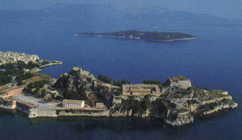

Δυο φρούρια αγκαλιάζουν την παλιά πόλη της Κέρκυρας
 Μπαίνοντας στο λιμάνι της Κέρκυρας, δεξιά στο βάθος, δεσπόζει η επιβλητική φιγούρα του βενετσιάνικου κάστρου, της Fortezza Nuova (Νέο Φρούριο). Το Παλαιό Φρούριο (η Fortezza Vecchia), με τους προμαχώνες και τους πύργους του, τις επάλξεις και τις γαλαρίες, τις σκοτεινές φυλακές και τις μυστικές καταπακτές, τα κρυφά παραπόρτια και τις λαμπροστόλιστες με οικόσημα πύλες στήριξε για τετρακόσια χρόνια (1386 – 1797) τη δύναμη των Βενετσιάνων στην περιοχή. Μια τάφρος, που σήμερα έχει τη μορφή διώρυγας πλάτους 40 μ. χωρίζει το Παλαιό Φρούριο από την πόλη. | ||